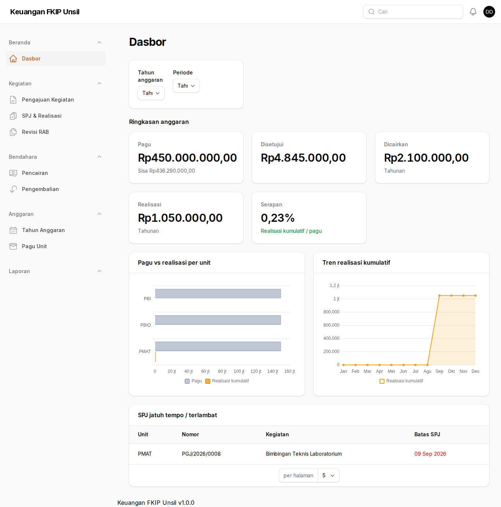
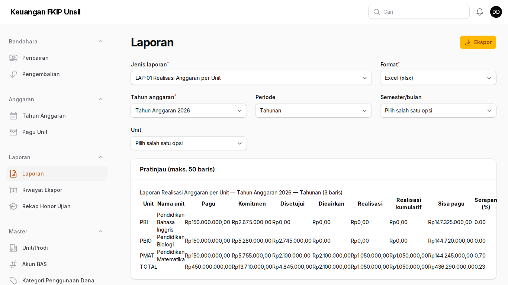
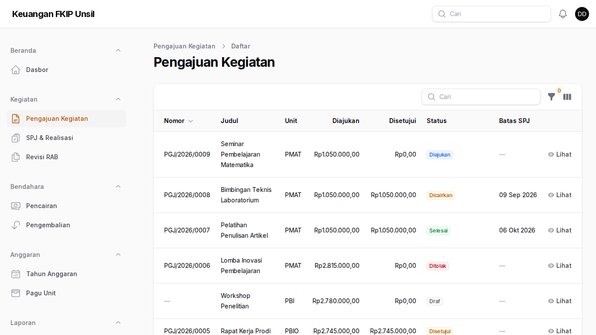
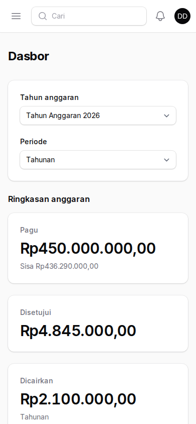

Panduan Pimpinan/Dekanat
Peran: pimpinan
Tujuan peran
Memantau anggaran dan realisasi seluruh unit (baca-saja).
Cara masuk
- Buka halaman masuk aplikasi (alamat https://supportfkip.unsil.ac.id/keuangan/panel).
- Isi Alamat email dan Kata sandi akun Anda, lalu klik Masuk.
Langkah-langkah
Membaca dasbor
Beranda → Dasbor: pilih tahun dan periode. Kartu ringkasan menampilkan pagu, disetujui, dicairkan, realisasi, dan serapan; grafik membandingkan serapan per unit dan tren bulanan. Baris “Honor ujian (impor fkipapp)” adalah rekap baca-saja.

Membaca dasbor Laporan
Laporan → Laporan: LAP-01 Realisasi Anggaran per Unit dan LAP-02 Rekap Pengajuan per Status, format Excel/PDF.

Laporan Rincian pengajuan
Kegiatan → Pengajuan Kegiatan: buka pengajuan untuk melihat RAB dan riwayat persetujuan.

Rincian pengajuan Di ponsel
Dasbor dapat dibuka dari ponsel; kartu ringkasan tampil bertumpuk.

Di ponsel
Tanya-jawab
- Apa arti serapan?
- Realisasi kumulatif dibagi pagu unit pada tahun berjalan.
Kontak
Admin Keuangan FKIP (keuangan-fkip@unsil.ac.id) · Admin TI Fakultas untuk akun & MFA.